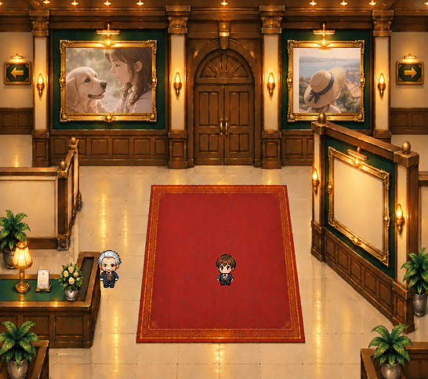
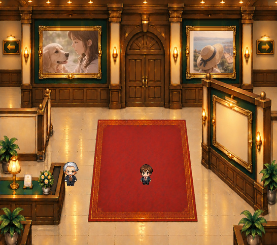
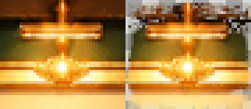
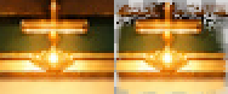

点灯状態を切り替えて確認
左右の写真は実例、キャラは正式PNG。元の展示枠や写真本体は変更していません。
写真を残した点灯・非表示比較


2灯あり


2灯なし
壁面復元・透過・原本再合成のQA：検証データ
独立した金色の灯り


写真入り表示では写真の上端が暗くならないよう、展示灯の発光部分だけを前景として重ねます。ゲーム本体へはまだ組み込んでいません。
金色の写真枠の上にある照明器具を、左右それぞれ独立させました。
左右の写真は実例、キャラは正式PNG。元の展示枠や写真本体は変更していません。

2灯あり

2灯なし
壁面復元・透過・原本再合成のQA：検証データ


写真入り表示では写真の上端が暗くならないよう、展示灯の発光部分だけを前景として重ねます。ゲーム本体へはまだ組み込んでいません。